일반기계기사 (2017-09-23 기출문제)
1과목: 재료역학
1. T형 단면을 갖는 외팔보에 5kNㆍm의 굽힘 모멘트가 작용하고 있다. 이 보의 탄성선에 대한 곡률 반지름은 몇 m 인가? (단, 탄성계수 E=150GPa, 중립축에 대한 2차 모멘트 I=868×10-9m4이다.)
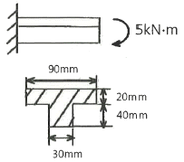
- 26.04
- 36.04
- 46.04
- 56.04
(정답률: 54%)

2. 그림과 같이 두 가지 재료로 된 봉이 하중 P를 받으면서 강체로 된 보를 수평으로 유지시키고 있다. 강봉에 작용하는 응력이 150MPa일 때 Al봉에 작용하는 응력은 몇 MPa인가? (단, 강과 Al의 탄성계수의 비는 ES/Ea=3이다.)
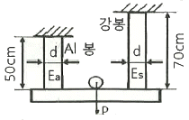
- 70
- 270
- 555
- 875
(정답률: 56%)
3. 두께 10mm인 강판으로 직경 2.5m의 원통형 압력용기를 제작하였다. 최대 내부 압력이 1200kPa일 때 축방향 응력은 몇 MPa인가?
- 75
- 100
- 125
- 150
(정답률: 55%)
4. 그림과 같은 단순지지보에서 반력 RA는 몇 kN인가?
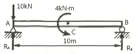
- 8
- 8.4
- 10
- 10.4
(정답률: 64%)
5. 그림에서 블록 A를 이동시키는데 필요한 힘 P는 몇 N이상인가? (단, 블록과 접촉면과의 마찰 계수 μ=0.4 이다.)
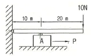
- 4
- 8
- 10
- 12
(정답률: 45%)
6. 길이가 L이고 직경이 d인 강봉을 벽 사이에 고정하고 온도를 △T 만큼 상승시켰다. 이 때 벽에 작용하는 힘은 어떻게 표현되나? (단, 강봉의 탄성계수는 E 이고, 선팽창계수는 α이다.)
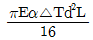
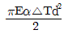
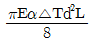
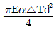
(정답률: 67%)
7. 최대 굽힘모멘트 M=8kNㆍm를 받는 단면의 굽힘 응력을 60MPa로 하려면 정사각단면에서 한 변의 길이는 약 몇 cm 인가?
- 8.2
- 9.3
- 10.1
- 12.0
(정답률: 65%)
8. 원형단면의 단순보가 그림과 같이 등분포하중 N/m을 받도 허용굽힘응력이 400MPa일 때 단면의 지름은 최소 약 몇 mm가 되어야 하는가?
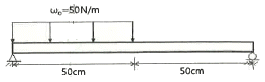
- 4.1
- 4.3
- 4.5
- 4.7
(정답률: 35%)
9. 탄성(elasticity)에 대한 설명으로 옳은 것은?
- 물체의 변형율을 표시하는 것
- 물체에 작용하는 외력의 크기
- 물체에 영구변형을 일어나게 하는 성질
- 물체에 가해진 외력이 제거되는 동시에 원형으로 되돌아가려는 성질
(정답률: 71%)
10. 그림과 같이 20cm×10cm의 단면적을 갖고 양단이 회전단으로 된 부재가 중심축 방향으로 압축력 P가 작용하고 있을 때 장주의 길이가 2m라면 세장비는?
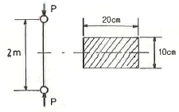
- 89
- 69
- 49
- 29
(정답률: 63%)
11. 직경이 2cm인 원통형 막대에 2kN의 인장하중이 작용하여 균일하게 신장되었을 때, 변형 후 직경의 감소량은 약 몇 mm인가? (단, 탄성계수는 30GPa이고, 포아송 비는 0.3이다.)
- 0.0128
- 0.00128
- 0.064
- 0.0064
(정답률: 55%)
12. 길이가 L인 외팔보의 자유단에 집중하중 P가 작용할 때 최대 처짐량은? (단, E:탄성계수, I:단면2차모멘트이다.)
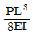
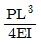
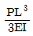
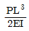
(정답률: 67%)
13. 바깥지음이 46mm인 중공축이 120kW의 동력을 전달하는데 이때의 각속도는 40rev/s이다. 이 축의 허용비틀림 응력이 τa=80MPa일 때, 최대 안지름은 약 몇 mm인가?
- 35.9
- 41.9
- 45.9
- 51.9
(정답률: 48%)
14. 그림과 같은 두 평면응력 상태의 합에서 최대전단응력은?
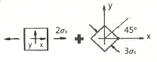
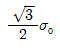
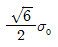
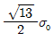
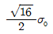
(정답률: 26%)
15. 다음 그림과 같은 사각단면의 상승 모멘트(Product of inertia) Ixy는 얼마인가?
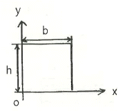
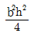
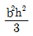
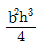
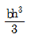
(정답률: 32%)
16. 지름 50mm인 중실축 ABC가 A에서 모터에 의해 구동된다. 모터는 600rpm으로 50kW의 동력을 전달한다. 기계를 구동하기 위해서 기어 B는 35kW, 기어 C는 15kW를 필요로 한다. 축 ABC에 발생하는 최대 전단응력은 몇 MPa인가?
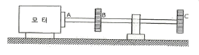
- 9.73
- 22.7
- 32.4
- 64.8
(정답률: 47%)
17. 그림과 같은 반지름 a인 원형 단면축에 비틀림 모멘트 T가 작용한다. 단면의 임의의 위치r(0＜r＜a)에서 방생하는 전단응력은 얼마인가? (단, Io=Ix+Iy이고, I는 단면 2차 모멘트이다.)
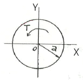
- 0
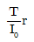
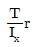
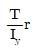
(정답률: 59%)
18. 길이가 L인 균일단면 막대기에 굽힘 모멘트 M이 그림과 같이 작용하고 있을 때, 막대에 저장된 탄성 변형 에너지는? (단, 막대기의 굽힘강성 EI는 일정하고, 단면적은 A이다.)
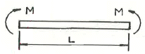
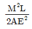
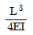
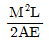
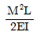
(정답률: 50%)
19. 길이가 L인 양단 고정보의 중앙점에 집중하중 P가 작용할 때 모멘트가 0이 되는 지점에서의 처짐량은 얼마인가? (단, 보의 굽힘강성 EI는 일정하다.)
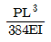
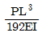
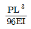
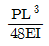
(정답률: 21%)
20. 바깥지름 50cm, 안지름 40cm의 중공원통 500kN의 압축하중이 작용했을 때 발생하는 압축응력은 약 몇 MPa인가?
- 5.6
- 7.1
- 8.4
- 10.8
(정답률: 65%)
2과목: 기계열역학
21. 어떤 냉매를 사용하는 냉동기의 압력-엔탈피 선도(P-h 선도)가 다음과 같다. 여기서 각각의 엔탈피는 h1=1638kJ/kg, h2=1983kJ/kg, h3=h4=559kJ/kg 일 때 성적계수는 약 얼마인가? (단, h1, h2, h3, h4는 P-h 선도에서 각각 1, 2, 3, 4에서의 엔탈피를 나타낸다.)
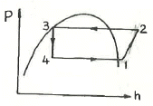
- 1.5
- 3.1
- 5.2
- 7.9
(정답률: 58%)
22. 냉매의 요구조건으로 옳은 것은?
- 비체적이 커야 한다.
- 증발압력이 대기압보다 낮아야 한다.
- 응고점이 높아야 한다.
- 증발열이 커야 한다.
(정답률: 46%)
23. 상온(25℃)의 실내에 있는 수은 기압계에서 수은주의 높이가 730mm라면, 이때 기압은 약 몇 kPa인가? (단, 25℃기준, 수은 밀도는 13534kg/m3이다.)
- 91.4
- 96.9
- 99.8
- 104.2
(정답률: 62%)
24. 다음 중 등 엔트로피(entropy) 과정에 해당하는 것은?
- 가역 단열 과정
- polytropic 과정
- Joule - Thomson 교축 과정
- 등온 팽창 과정
(정답률: 55%)
25. 온도 5℃와 35℃ 사이에서 역카르노 사이클로 운전하는 냉동기의 최대 성적 계수는 약 얼마인가?
- 12.3
- 5.3
- 7.3
- 9.3
(정답률: 65%)
26. 1MPa의 일정한 압력(이 때의 포화온도는 180℃) 하에서 물이 포화액에서 포화증기로 상변화를 하는 경우 포화액의 비체적과 엔탈피는 각각 0.00113m3/kg, 763kJ/kg이고, 포화증기의 비체적과 엔탈피는 각각 0.1944m3/kg, 2778kJ/kg이다. 이 때 증발에 따른 내부에너지 변화(ufg)와 엔트로피 변화(sfg)는 약 얼마인가?
- ufg=1822kJ/kg, sfg=3.704kJ(kgㆍK)
- ufg=2002kJ/kg, sfg=3.704kJ(kgㆍK)
- ufg=1822kJ/kg, sfg=4.447kJ(kgㆍK)
- ufg=2002kJ/kg, sfg=4.447kJ(kgㆍK)
(정답률: 39%)
27. 포화증기를 단열상태에서 압축시킬 때 일어나는 일반적인 현상 중 옳은 것은?
- 과열증기가 된다.
- 온도가 떨어진다.
- 포화수가 된다.
- 습증기가 된다.
(정답률: 48%)
28. 자동차 엔진을 수리한 후 실린더 블록과 헤드사이에 수리 전과 비교하여 더 두꺼운 개스킷을 넣었다면 압축비와 열효율은 어떻게 되겠는가?
- 압축비는 감소하고, 열효율도 감소한다.
- 압축비는 감소하고, 열효율도 증가한다.
- 압축비는 증가하고, 열효율도 감소한다.
- 압축비는 증가하고, 열효율도 증가한다.
(정답률: 45%)
29. 밀폐된 실린더 내의 기체를 피스톤으로 압축하는 동안 300kJ의 열이 방출되었다. 압축일의 양이 400kJ이라면 내부에너지 변화량은 약 몇 kJ인가?
- 100
- 300
- 400
- 700
(정답률: 51%)
30. 두께가 4cm인 무한히 넓은 금속 평판에서 가열면의 온도를 200℃, 냉각면의 온도를 50℃로 유지하였을 때 금속판을 통한 정상상태의 열유속이 300kW/m2이면 금속판의 열전도율(thermal conductivity)은 약 몇 W/(mㆍK)인가? (단, 금속판에서의 열전달은 Fourier 법칙을 따른다고 가정한다.)
- 20
- 40
- 60
- 80
(정답률: 50%)
31. 가스 터빈 엔진의 열효율에 대한 다음 설명 중 잘못된 것은?
- 압축기 전후의 압력비가 증가할수록 열효율이 증가한다.
- 터빈 입구의 온도가 높을수록 열효율은 증가하나 고온에 견딜 수 있는 터빈 블레이드 개발이 요구된다.
- 터빈 일에 대한 압축기 일의 비를 back work ratio 라고 하며, 이 비가 클수록 열효율이 높아진다.
- 가스 터빈 엔진은 증기 터빈 원동소와 결합된 복합시스템을 구성하여 열효율을 높일 수 있다.
(정답률: 42%)
32. 다음 장치들에 대한 열역학적 관점의 설명으로 옳은 것은?
- 노즐은 유체를 서서히 낮은 압력으로 팽창하여 속도를 감속시키는 기구이다.
- 디퓨저의 저속의 유체를 가속하는 기구이며 그 결과 유체의 압력이 증가한다.
- 터빈은 작동유체의 압력은 이용하여 열을 생성하는 회전식 기계이다.
- 압축기의 목적은 외부에서 유입된 동력을 이용하여 유체의 압력을 높이는 것이다.
(정답률: 53%)
33. 물의 증발열은 101.325kPa에서 2257kJ/kg이고, 이 때 비체적은 0.00104m3/kg에서 1.67m3/kg으로 변화한다. 이 증발 과정에 있어서 내부에너지의 변화량(kJ/kg)은?
- 237.5
- 2375
- 208.0
- 2088
(정답률: 56%)
34. 100℃와 50℃ 사이에서 작동되는 가역열기관의 최대 열효율은 약 얼마인가?
- 55.0%
- 16.7%
- 13.4%
- 8.3%
(정답률: 64%)
35. 20℃, 400kPa의 공기가 들어 있는 1m3의 용기와 30℃, 150kPa의 공기 5kg이 들어 있는 용기가 밸브로 연결되어 있다. 밸브가 열려서 전체 공기가 섞인 후 25℃의 주위와 열적평형을 이룰 때 공기의 압력은 약 몇 kPa인가? (단, 공기의 기체상수는 0.287kJ/(kgㆍK)이다.)
- 110
- 214
- 319
- 417
(정답률: 45%)
36. 압력 1N/cm2, 체적 0.5m3인 기체 1kg을 가역과정으로 압축하여 압력이 2N/cm2, 체적이 0.3m3로 변화되었다. 이 과정이 압력-체적(P-V)선도에서 선형적으로 변화되었다면 이 때 외부로부터 받은 일은 약 몇 Nㆍm인가?
- 2000
- 3000
- 4000
- 5000
(정답률: 36%)
37. 섭씨온도 -40℃를 화씨온도(°F)로 환산하면 약 얼마인가?
- -16°F
- -24°F
- -32°F
- -40°F
(정답률: 56%)
38. 고열원과 저열원 사이에서 작동하는 카르노사이클 열기관이 있다. 이 열기관에서 60kJ의 일을 얻기 위하여 100kJ의 열을 공급하고 있다. 저열원의 온도가 15℃라고 하면 고열우너의 온도는?
- 128℃
- 288℃
- 447℃
- 720℃
(정답률: 57%)
39. 227℃의 증기가 500kJ/kg의 열을 받으면서 가역 등온 팽창한다. 이때 증기의 엔트로피 변화는 약 몇 kJ/(kgㆍK)인가?
- 1.0
- 1.5
- 2.5
- 2.8
(정답률: 64%)
40. 최고온도 1300K와 최저온도 300K 사이에서 작동하는 공기표준 Brayton 사이클의 열효율은 약 얼마인가? (단, 압력비는 9, 공기의 비열비는 1.4 이다.)
- 30%
- 36%
- 42%
- 47%
(정답률: 58%)
3과목: 기계유체역학
41. 정상, 비압축성 상태의 2차원 속도장이 (x, y)좌표계에서 다음과 같이 주어졌을 때 유선의 방정식으로 옳은 것은? (단, u와 v는 각각 x, y방향의 속도성분이고, C는 상수이다.)
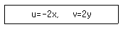
- x2y=C
- xy2=C
- xy=C
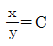
(정답률: 53%)
42. 어떤 물체의 속도가 초기 속도의 2배가 되었을 때 항력계수가 초기 항력계수의 1/2로 줄었다. 초기에 물체가 받는 저항력이 D하고 할 때 변화된 저항력은 얼마가 되는가?
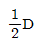
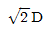
- 2D
- 4D
(정답률: 58%)
43. 그림과 같이 지름이 D인 물방울을 지름 d인 N개의 작은 물방울로 나누려고 할 때 요구되는 에너지양은? (단, D>>d이고, 물방울의 표면장력은 σ이다.)
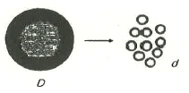
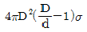
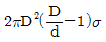
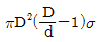
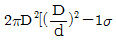
(정답률: 23%)
44. 평판 위에서 이상적인 층류 경계층 유동을 해석하고자 할 때 다음 중 옳은 설명을 모두 고른 것은?
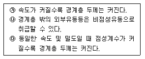
- ㉯
- ㉮, ㉯
- ㉮, ㉰
- ㉯, ㉰
(정답률: 48%)
45. 그림과 같은 원통형 축 틈새에 점성계수가 0.51 Paㆍs인 윤활유가 채워져 있을 때, 축을 1800rpm으로 회전시키기 위해서 필요한 동력은 약 몇 W인가? (단, 틈새에서의 유동은 Couette 유동이라고 간주한다.)
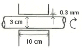
- 45.3
- 128
- 4807
- 13610
(정답률: 25%)
46. 대기압을 측정하는 기압계에서 수은을 사용하는 가장 큰 이유는?
- 수은의 점성계수가 작기 때문에
- 수은의 동점성계수가 크기 때문에
- 수은의 비중량이 작기 때문에
- 수은의 비중이 크기 때문에
(정답률: 61%)
47. 다음 중 유체 속도를 측정할 수 있는 장치로 볼 수 없는 것은?
- Pitot-static tube
- Laser Doppler Velocimetry
- Hot Wire
- Piezometer
(정답률: 41%)
48. 자동차의 브레이크 시스템의 유압장치에 설치된 피스톤과 실린더 사이의 환형 틈새 사이를 통한 누설유동은 두 개의 무한 평판 사이의 비압축성, 뉴턴유체의 층류유동으로 가정할 수 있다. 실린더 내 피스톤의 고압측과 저압측과의 압력차를 2배로 늘렸을 때, 작동유체의 누설유량은 몇 배가 될 것인가?
- 2 배
- 4 배
- 8 배
- 16 배
(정답률: 52%)
49. 안지름 20cm의 원통형 용기의 축을 수직으로 놓고 물을 넣어 축을 중심으로 300rpm의 회전수로 용기를 회전시키면 수면의 최고점과 최저점의 높이 차(H)는 약 몇 cm 인가?
- 40.3cm
- 50.3cm
- 60.3cm
- 70.3cm
(정답률: 52%)
50. 부차적 손실계수가 4.5인 밸브를 관마찰계수가 0.02이고, 지름이 5cm인 관으로 환산한다면 관의 상당길이는 약 몇 m 인가?
- 9.34
- 11.25
- 15.37
- 19.11
(정답률: 58%)
51. 그림과 같이 유량 Q=0.03m3/s의 물 분류가 V=40m/s의 속도로 곡면판에 충돌하고 있다. 판은 고정되어 있고 휘어진 각도가 135°일 때 분류로부터 판이 받는 총 힘의 크기는 약 몇 N인가?
- 2049
- 2217
- 2638
- 2898
(정답률: 38%)
52. 단면적이 10cm2인 관에, 매분 6kg의 질량유량으로 비중 0.8인 액체가 흐르고 있을 때 액체의 평균속도는 약 몇 m/s인가?
- 0.075
- 0.125
- 6.66
- 7.50
(정답률: 53%)
53. 액체 속에 잠겨진 경사면에 작용되는 힘의 크기는? (단, 면적을 A, 액체의 비중량을  , 면의 도심까지의 깊이를 hc라 한다.)
, 면의 도심까지의 깊이를 hc라 한다.)
(정답률: 53%)
54. 물이 5m/s로 흐르는 관에서 에너지선(E.L)과 수력기울기선(H.G.L.)의 높이 차이는 약 몇 m인가?
- 1.27
- 2.24
- 3.82
- 6.45
(정답률: 61%)
55. 그림과 같은 물탱크에 Q의 유량으로 물이 공급되고 있다. 물탱크의 측면에 설치한 지름 10cm의 파이프를 통해 물이 배출될 때 배출구로부터의 수위 h를 3m로 일정하게 유지하려면 유량 Q는 약 몇 m3/s이어야 하는가? (단, 물탱크의 지름은 3m 이다.)
- 0.03
- 0.04
- 0.⑤
- 0.06
(정답률: 57%)
56. 관마찰계수가 거의 상대조도(relative roughness)에만 의존하는 경우는?
- 완전난류유동
- 완전층류유동
- 임계유동
- 천이유동
(정답률: 44%)
57. 속도성분이 u=2x, v=-2y인 2차원 유동의 속도 포텐셜 함수 ø로 옳은 것은? (단, 속도 포텐셜 ø는 로 정의된다.)
- 2x-2y
- x3-y3
- -2xy
- x2-y2
(정답률: 51%)
58. 다음 중 체적탄성계수와 차원이 같은 것은?
- 체적
- 힘
- 압력
- 레이놀드(Reynolds) 수
(정답률: 59%)
59. 레이놀즈수가 매우 작은 느린 유동(creeping flow)에서 물체의 항력 F는 속도 V, 크기 D, 그리고 유체의 점성계수 μ에 의존한다. 이와 관계하여 유도되는 무차원수는?
(정답률: 48%)
60. 실제 잠수함 크기의 1/25인 모형 잠수함을 해수에서 실험하고자 한다. 만일 실형 잠수함을 5m/s로 운전하고자 할 때 모형 잠수함의 속도는 몇 m/s로 실험해야 하는가?
- 0.2
- 3.3
- 50
- 125
(정답률: 58%)
4과목: 기계재료 및 유압기기
61. 철강을 부식시키기 위한 부식제로 옳은 것은? (문제 오류로 실제 시험에서는 모두 정답처리 되었습니다. 여기서는 가번을 누르면 정답 처리 됩니다.)
- 왕수
- 질산 용액
- 나이탈 용액
- 염화제2철 용액
(정답률: 53%)
62. 배빗메탈 이라고도 하는 베어링용 합금인 화이트 메탈의 주요성분으로 옳은 것은?
- Pb-W-Sn
- Fe-Sn-Al
- Sn-Sb-Cu
- Zn-Sn-Cr
(정답률: 68%)
63. 전기 전도율이 높은 것에서 낮은 순으로 나열된 것은?
- Al>Au>Cu>Ag
- Au>Cu>Ag>Al
- Cu>Au>Al>Ag
- Ag>Cu>Au>Al
(정답률: 61%)
64. 게이지용강이 갖추어야 할 조건으로 틀린 것은?
- HRC55 이상의 경도를 가져야 한다.
- 담금질에 의한 변형 및 균열이 적어야 한다.
- 오랜 시간 경과하여도 치수의 변화가 적어야 한다.
- 열팽창계수는 구리와 유사하며 취성이 커야 한다.
(정답률: 75%)
65. 심냉처리를 하는 주요 목적으로 옳은 것은?
- 오스테나이트 조직을 유지시키기 위해
- 시멘타이트 변태를 촉진시키기 위해
- 베이나이트 변태를 진행시키기 위해
- 마텐자이트 변태를 완전히 진행시키기 위해
(정답률: 73%)
66. 구상 흑연주철의 구상화 첨가제로 주로 사용되는 것은?
- Mg, Ca
- Ni, Co
- Cr, Pb
- Mn, Mo
(정답률: 60%)
67. Ni-Fe 합금으로 불변강이라 불리우는 것이 아닌 것은?
- 인바
- 엘린바
- 콘스탄탄
- 플래티나이트
(정답률: 57%)
68. 열경화성 수지에 해당하는 것은?
- ABS 수지
- 폴리스티렌
- 폴리에틸렌
- 에폭시 수지
(정답률: 62%)
69. 마템퍼링(martempering)에 대한 설명으로 옳은 것은?
- 조직은 완전한 펄라이트가 된다.
- 조직은 베어나이트와 마텐자이트가 된다.
- Ms점 직상의 온도까지 급냉한 후 그 온도에서 변태를 완료시키는 것이다.
- Mf점 이하의 온도까지 급냉한 후 그 온도에서 변태를 완료시키는 것이다.
(정답률: 55%)
70. α-Fe과 Fe3C의 층상조직은?
- 펄라이트
- 시멘타이트
- 오스테나이트
- 레데뷰라이트
(정답률: 53%)
71. 압력 제어 밸브에서 어느 최소 유량에서 어느 최대 유량까지의 사이에 증대하는 압력은?
- 오버라이드 압력
- 전량 압력
- 정격 압력
- 서지 압력
(정답률: 54%)
72. 그림과 같은 유압 기호의 명칭은?
- 공기압 모터
- 요동형 엑추에이터
- 정용량형 펌프ㆍ모터
- 가변용량형 펌프ㆍ모터
(정답률: 49%)
73. 그림과 같은 실린더를 사용하여 F=3kN의 힘을 발생 시키는데 최소한 몇 MPa의 유압이 필요한가? (단, 실린더의 내경은 45mm이다.)
- 1.89
- 2.14
- 3.88
- 4.14
(정답률: 68%)
74. 다음 중 압력 제어 밸브들로만 구성되어 있는 것은?
- 릴리프 밸브, 무부하 밸브, 스로틀 밸브
- 무부하 밸브, 체크 밸브, 감압 밸브
- 셔틀 밸브, 릴리프 밸브, 시퀀스 밸브
- 카운터 밸런스 밸브, 시퀀스 밸브, 릴리프 밸브
(정답률: 63%)
75. 유압 펌프의 토출 압력이 6MPa, 토출 유량이 40cm3/min일 때 소요 동력은 몇 W인가?
- 240
- 4
- 0.24
- 0.4
(정답률: 66%)
76. 축압기 특성에 대한 설명으로 옳지 않은 것은?
- 중추형 축압기 안에 유압유 압력은 항상 일정하다.
- 스프링 내장형 축압기인 경우 일반적으로 소형이며 가격이 저렴하다.
- 피스톤형 가스 충진 축압기의 경우 사용 온도범위가 블래더형에 비하여 넓다.
- 다이어프램 충진 축압기의 경우 일반적으로 대형이다.
(정답률: 34%)
77. 유압기기의 통로(또는 관로)에서 탱크(또는 매니폴드 등)로 돌아오는 액체 또는 액체가 돌아오는 현상을 나타내는 용어는?
- 누설
- 드레인
- 컷오프
- 토출량
(정답률: 70%)
78. 유압밸브의 전환 도중에 과도하게 생기는 밸브 포트 간의 흐름을 무엇이라고 하는가?
- 랩
- 풀 컷 오프
- 서지 압
- 인터플로
(정답률: 61%)
79. 밸브 입구측 압력이 밸브 내 스프링 힘을 초과 하여 포펫의 이동이 시작되는 압력을 의미하는 용어는?
- 배압
- 컷오프
- 크래킹
- 인터플로
(정답률: 47%)
80. 액추에이터의 배출 쪽 관로내의 공기의 흐름을 제어함으로써 속도를 제어하는 회로는?
- 클램프 회로
- 미터 인 회로
- 미터 아웃 회로
- 블리드 오프 회로
(정답률: 71%)
5과목: 기계제작법 및 기계동력학
81. 수평 직선 도로에서 일정한 속도로 주행하던 승용차의 운전자가 앞에 높인 장애물을 보고 급제동을 하여 정지하였다. 바퀴자국으로 파악한 제동거리가 25m이고, 승용차 바퀴와 도로의 운동마찰계수는 0.35일 때 제동하기 직전의 속력은 약 몇 m/s인가?
- 11.4
- 13.1
- 15.9
- 18.6
(정답률: 46%)
82. 보 AB는 질량을 무시할 수 있는 강체이고 A점은 마찰 없는 힌지(hinge)로 지지되어 있다. 보의 중점 C와 끝점 B에 각각 질량 m1과 m2가 놓여 있을 때 이 진동개의 운동방정식을 이라고 하면 m의 값으로 옳은 것은?
(정답률: 27%)
83. 그림은 2톤의 질량을 가진 자동차가 18km/h의 속력으로 벽에 충돌하는 상황을 위에서 본 것이며 범퍼를 병렬 스프링 2개로 가정하였다. 충돌과정에서 스프링의 최대 압축량이 0.2m 라면 스프링 상수 k는 얼마인가? (단, 타이어와 노면의 마찰은 무시한다.)
- 625 kN/m
- 312.5 kN/m
- 725 kN/m
- 1450 kN/m
(정답률: 46%)
84. 두 조화운동 x1=4sin10t와 x2=4sin10.2t를 합성하면 맥놀이(beat) 현상이 발생하는데 이 때 맥놀이 진동수 (Hz)는? (단, t의 단위는 s 이다.)
- 31.4
- 62.8
- 0.0159
- 0.0318
(정답률: 30%)
85. 외력이 가해지지 않고 오직 초기조건에 의하여 운동한다고 할 때 그림의 계가 지속적으로 진동하면서 감쇠하는 부족감쇠운동(underdamped motion)을 나타내는 조건으로 가장 옳은 것은?
(정답률: 43%)
86. OA와 AB의 길이가 각각 1m인 강체 막대 OAB가 x-y 평면 내에서 O점을 중심으로 회전하고 있다. 그림의 위치에서 막대 OAB의 각속도는 반시계 방향으로 5rad/s 이다. 이 때 A 에서 측정한 B점의 상대속도 의 크기는?
- 4 m/s
- 5 m/s
- 6 m/s
- 7 m/s
(정답률: 36%)
87. 질량이 30kg인 모형 자동차가 반경 40m인 원형경로를 20 m/s의 일정한 속력으로 돌고 있을 때 이 자동차가 법선방향으로 받는 힘은 약 몇 N인가?
- 100
- 200
- 300
- 600
(정답률: 42%)
88. 그림과 같이 경사진 표면에 50kg의 블록이 놓여있고 이 블록은 질량이 m인 추와 연결되어 있다. 경사진 표면과 블록사이의 마찰계수를 0.5라 할 때 이 블록을 경사면으로 끌어올리기 위한 추의 최소 질량(m)은 약 몇 kg인가?
- 36.5
- 41.8
- 46.7
- 54.2
(정답률: 45%)
89. 그림과 같이 길이 1m, 질량 20kg인 봉으로 구성된 기구가 있다. 봉은 A점에서 카트에 핀으로 연결되어 있고, 처음에는 움직이지 않고 있었으나 하중 P가 작용하여 카트가 왼쪽 방향으로 4m/s2의 가속도가 발생하였다. 이 때 봉의 초기 각가속도는?
- 6.0 rad/s2, 시계방향
- 6.0 rad/s2, 반시계방향
- 7.3 rad/s2, 시계방향
- 7.3 rad/s2, 반시계방향
(정답률: 29%)
90. 그림과 같이 질량이 동일한 두 개의 구슬 A, B가 있다. 초기에 A의 속도는 v이고 B는 정지되어 있다. 충돌 후 A와 B의 속도에 관한 설명으로 옳은 것은? (단, 두 구슬 사이의 반발계수는 1 이다.)
- A와 B 모두 정지한다.
- A와 B 모두 v의 속도를 가진다.
- A와 B 모두 v/2의 속도를 가진다.
- A는 정지하고 B는 v의 속도를 가진다.
(정답률: 55%)
91. 방전가공에서 전극 재료의 구비조건으로 가장 거리가 먼 것은?
- 기계가공이 쉬워야 한다.
- 가공 전극의 소모가 커야 한다.
- 가공 정밀도가 높아야 한다.
- 방전이 안전하고 가공속도가 빨라야 한다.
(정답률: 72%)
92. 전기 저항 용접의 종류에 해당하지 않는 것은?
- 심 용접
- 스폿 용접
- 테르밋 용접
- 프로젝션 용접
(정답률: 52%)
93. 기계 부품, 식기, 전기 저항선 등을 만드는 데 사용되는 양은의 성분으로 적절한 것은?
- Al의 합금
- Ni와 Ag의 합금
- Zn과 Sn의 합금
- Cu, Zn 및 Ni의 합금
(정답률: 49%)
94. 연삭 중 숫돌의 떨림 현상이 발생하는 원인으로 가장 거리가 먼 것은?
- 숫돌의 결합도가 약할 때
- 숫돌축이 편심되어 있을 때
- 숫돌의 평형상태가 불량할 때
- 연삭기 자체에서 진동이 있을 때
(정답률: 49%)
95. Taylor 공구 수명에 관한 실험식에서 세라믹 공구를 사용하여 지수(n)=0.5, 상수(C)=200, 공구수명(T)을 30(min)으로 조건을 주었을 때, 적합한 절삭속도는 약 몇 m/min인가?
- 30.3
- 32.6
- 34.4
- 36.5
(정답률: 48%)
96. 펀치와 다이를 프레스에 설치하여 판금 재료로 부터 목적하는 형상의 제품을 뽑아내는 전단 가공은?
- 스웨이징
- 엠보싱
- 브로칭
- 블랭킹
(정답률: 56%)
97. 버니어캘리퍼스에서 어미자 49mm를 50등분한 경우 최소 읽기 값은 몇 mm인가? (단, 어미자의 최소눈금은 1.0mm 이다.)
- 1/50
- 1/25
- 1/24.5
- 1/20
(정답률: 66%)
98. 전기 도금의 반대방향으로 가공물을 양극, 전기저항이 적은 구리, 아연을 음극에 연결한 후 용액에 침지하고 통전하여 금속표면의 미소 돌기부분을 용해하여 거울면과 같이 광택이 있는 면을 가공할 수 있는 특수가공은?
- 방전가공
- 전주가공
- 전해연마
- 슈퍼피니싱
(정답률: 60%)
99. Fe-C 평형상태도에서 탄소함유량이 약 0.80%인 강을 무엇이라고 하는가?
- 공석강
- 공정주철
- 아공정주철
- 과공정주철
(정답률: 58%)
100. 주조에 사용되는 주물사의 구비조건으로 옳지 않는 것은?
- 통기성이 좋을 것
- 내화성이 적을 것
- 주형 제작이 용이할 것
- 주물 표면에서 이탈이 용이할 것
(정답률: 55%)
M/EI = 1/R
여기서 M은 5kNㆍm, E는 150GPa, I는 868×10^-9m^4이다.
따라서 R은 다음과 같이 계산할 수 있다.
R = EI/M = (150×10^9 Pa) × (868×10^-9 m^4) / (5×10^3 Nㆍm) = 26.04 m
따라서 정답은 "26.04"이다.